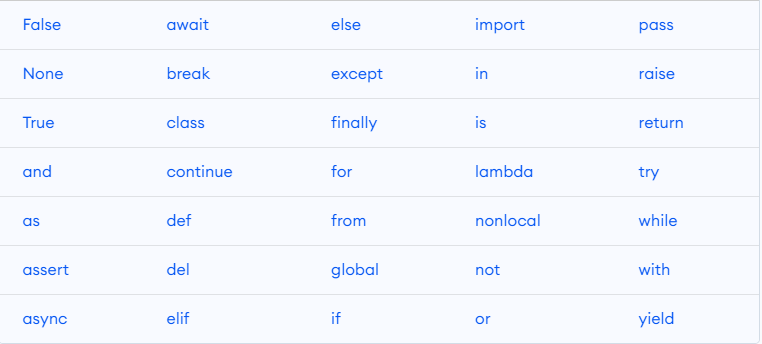

Python Theoretical
Theoretical interview questions in Python are designed to assess a candidate's understanding of fundamental concepts and principles in the field of software development.
1. What are key features of Python ?
- Easy to learn due to clear syntax and readability
- Easy to interpret, making debug is easy
- Free and open source
- OOP supported, general purpose programming language
- Python is dynamically typed, this means that you don’t need to state the types of variables when you declare them or anything like that.
2. What are keywords in Python ?
Keywords are the reserved words in Python. We cannot use a keyword as a variable name, function name or any other identifier. Here's a list of all keywords in Python Programming

3. What are literals in Python ?
Literals in Python refer to the data that is given in a variable or constant.
- String Literals
- Numeric Literals
- Boolean Literals
- Special Literals
4. What are functions in Python ?
Functions in Python refer to blocks that have organised, and reusable codes to perform single, and related events. Functions are important to create better modularity for applications which reuse high degree of coding. Functions are executed only when a call is made to the function.
5. What is the difference between list and tuples in Python ?
| LIST | TUPLE |
|---|---|
| Mutable. Items can be changed | Immutable. Items cannot be changed |
| Slower than tuples | Faster than list |
| eg_list= [1,2,3,4,5] | example=(1,2,3,4,5) |
6. What are Python namespaces ?
A namespace is a naming system used to make sure that names are unique to avoid naming conflicts.The objects are variables and functions.
- Built-in namespace– These namespaces contain all the built in objects in python and are available whenever python is running.
- Global namespace– These are namespaces for all the objects created at the level of the main program.
- Enclosing namespaces– These namespaces are at the higher level or outer function.
- Local namespaces– These namespaces are at the local or inner function.
7. What are decorators in Python ?
Decorators in Python are essentially functions that add functionality to an existing function in Python without changing the structure of the function itself. Decorators are used to add some design patterns to a function without changing its structure.
Decorators generally are defined before the function they are enhancing. To apply a decorator we first define the decorator function. Then we write the function it is applied to and simply add the decorator function above the function it has to be applied to. For this, we use the @ symbol before the decorator.
def whee_decorator(func):
def wrapper():
print("Something is happening before the function is called.")
func()
print("Something is happening after the function is called.")
return wrapper
@whee_decorator
def say_whee():
print("Whee!")
8. What is slicing in Python ?
Slicing is used to access parts of sequences like lists, tuples, and strings.
The syntax of slicing is [start:stop:step]
- start: refer starting index for collection. In Python first index is 0
- stop: refer last index for collection which is not included.
- step: refer incrementation / decrementation for each iteration.
Checkout following examples to understand better
example=[]
example[start:stop] # items start through stop-1
example[start:] # items start through the rest of the array
example[:stop] # items from the beginning through stop-1
example[:] # a copy of the whole array
example[start:stop:step] # # start through not past stop, by step
9. How is memory managed in Python ?
Memory is managed in Python in the following ways:
-
Memory management in Python is managed by Python private heap space. All Python objects and data structures are located in a private heap. The programmer does not have access to this private heap. The Python interpreter takes care of this instead.
-
The allocation of heap space for Python objects is done by Python’s memory manager. The core API gives access to some tools for the programmer to code.
-
Python also has an inbuilt garbage collector, which recycles all the unused memory and so that it can be made available to the heap space.
10. What are Python modules? Name some commonly used built-in modules in Python ?
A module is a file containing Python definitions and statements. This code can either be functions classes or variables. Ex ; os, sys, math, random, json, csv
11. What are local variables and global variables in Python ?
- Global: Variables declared outside a function or in global space are called global variables. These variables can be accessed by any function in the program
- Local: Any variable declared inside a function is known as a local variable. This variable is present in the local space and not in the global space.
BASE_URL is a global variable and user_domain is local variable and only can be accessed in scope of function
BASE_URL="www.github.com"
def get_user_domain(base_url:str,username:str):
user_domain:str=""
user_domain=f"{base_url}/{username}"
return user_domain
12. What is type conversion in Python ?
Type conversion refers to the conversion of one data type into another.
-
Implicit type conversion, interpreter helps in automatically converting the data type into another data type without any User involvement.
-
Explicit type conversion the data type in changed into a required type by the user.
13. What is PEP 8 and why is it important ?
PEP stands for Python Enhancement Proposal. PEP 8 is especially important since it documents the style guidelines for Python Code. It is a set of rules that specify how to write and design Python code for maximum readability.
14. What is docstring in Python?
Documentation string or docstring is a multiline string used to document a specific code segment. Below you can see example docstr for do_sth function
def do_sth(:
"""
do_sth method return message (I AM DOCSTRING)
"""
return "DO STH"
15. What is PYTHONPATH in Python ?
The PYTHONPATH variable has a value that is a string with a list of directories that Python should add to the sys.path directory list. If PYTHONPATH is not setted you can encounter with various problems such as xyz package is not found and etc.
If you want to set PYTHONPATH please do as following
echo $PYTHONPATH # if return none do the following
export PYTHONPATH="$PWD" # project root directory
16. What is a lambda function in Python ?
A lambda function is an anonymous function (i.e., defined without a name) that can take any number of arguments but, unlike normal functions, evaluates and returns only one expression
# lambda function
lambda x: x - 1
# normal function
def decrease(x):
return x - 1
17. How Python is interpreted ?
Python as a language is not interpreted or compiled. Interpreted or compiled is the property of the implementation. Python is a bytecode(set of interpreter readable instructions) interpreted generally.
18. What does args and *kwargs mean ?
args stands for arguments, and kwargs stands for is keyword arguments. * args allows you to pass the desired number of arguments to the function * kwargs represent same idea, but only that this format uses keyword-based Python dictionaries
Let's look at following example to understand better args and *kwargs
def example(x,y,*args,**kwargs):
# access args, it's a tuple
arguments=[arg for arg in args]
# access kwargs, it's a dictionary
keyword_arguments={key:value for (key,value) in kwargs.items()}
print(f"x:{x}, y:{y}")
print(f"arguments:{arguments}")
print(f"keyword_arguments:{keyword_arguments}")
example(-3,-2,-1,0,a= 1, b= 2, c= 3, d= 4, e= 5)
The code provided above outputs the following:
x:-3, y:-2
arguments:[-1, 0]
keyword_arguments:{'a': 1, 'b': 2, 'c': 3, 'd': 4, 'e': 5}
19. What is context manager in Python ?
A context manager is a Python construct that is used to manage resources, such as files or network connections, that need to be properly initialized and cleaned up after use. The context manager provides a convenient way to allocate and release resources automatically, ensuring that resources are properly managed even if an error occurs or an exception is raised.
The context manager is implemented as an object that defines two methods: __enter__ and __exit__. The __enter__ method is called when the context is entered, and it returns the resource object that will be used in the block of code that follows.
The context manager can be used with the with statement, which provides a convenient way to manage resources in a safe and reliable manner. When the with statement is used, the context manager is automatically called when the block of code is entered, and it is automatically cleaned up when the block of code is exited, even if an error occurs.
class prep_interview:
def __enter__(self):
print("Entering the context...")
# Code to initialize the resource goes here
return self
def __exit__(self, exc_type, exc_val, exc_tb):
# Code to clean up the resource goes here
print("Exiting the context...")
# usage of the context manager
with prep_interview() as cm:
print("Inside the context.")
# built-in context manager
with open('file.txt', 'w') as f:
f.write('Hello, World!')
# python request library
with requests.Session() as session:
session.get('https://httpbin.org')
20 . What is __init__ in Python ?
The __init__ method is the Python equivalent of the C++ constructor in an object-oriented approach. The __init__ function is called every time an object is created from a class. The __init__ method lets the class initialize the object’s attributes and serves no other purpose. In constructor (__init__) you can return nothing. It required to return None
21. What does break, continue and pass meaning in Python ?
- break : Allows loop termination when some condition is met and the control is transferred to the next statement
- continue: Allows skipping some part of a loop when some specific condition is met and the control is transferred to the beginning of the loop
- Used when you need some block of code syntactically, but you want to skip its execution. This is basically null opearion. Nothing happens when this is executed.
index = -5
while True:
if index < 0:
pass
if index == 0:
index += 1
continue
if index > 0:
print(1 / index)
if index > 5:
break
index += 1
22. What is Scope Resolution in Python ?
A scope is a block of code where an object in Python remains relevant.Each and every object of python functions within its respective scope
23. What is the Python Global Interpreter Lock (GIL) ?
The Python Global Interpreter Lock (GIL) is a mechanism used in the CPython implementation of the Python programming language to ensure that only one thread executes Python bytecode at a time. The GIL is a mutex that protects access to Python objects, preventing multiple threads from modifying them at the same time.
The GIL has both benefits and drawbacks. On the one hand, it simplifies the implementation of the Python interpreter and makes it easier to write thread-safe Python code. On the other hand, it can limit the performance of multi-threaded Python programs, because only one thread can execute Python code at a time. This means that CPU-bound tasks, which require a lot of computation, may not be able to take full advantage of multi-core CPUs.
However, it's important to note that the GIL only affects multi-threaded Python programs, not multi-process Python programs. Python's multiprocessing module can be used to take advantage of multiple CPUs without being limited by the GIL. Additionally, the GIL is specific to the CPython implementation of Python, and other implementations such as Jython and IronPython do not have a GIL.
NOTE:The GIL can have a significant impact on the performance of multi-threaded Python programs that perform CPU-bound tasks, but it may have less of an impact on programs that spend most of their time waiting for I/O or calling into C extensions that release the GIL.
24. What are generators in Python ?
Generators are functions that return an iterable collection of items, one at a time, in a set manner. Generators, in general, are used to create iterators with a different approach. They employ the use of yield keyword rather than return to return a generator object.
Here's an example of a simple generator that generates the first n Fibonacci numbers:
# creating generator
def fibonacci(n):
a, b = 0, 1
for i in range(n):
yield a
a, b = b, a + b
# accessing generator
for number in fibonacci(10):
print(number)
# Code output: 0, 1, 1, 2, 3, 5, 8, 13, 21, 34
25. How are arguments passed by value or by reference in Python ?
- Pass by value: Copy of the actual object is passed. Changing the value of the copy of the object will not change the value of the original object.
- Pass by reference: Reference to the actual object is passed. Changing the value of the new object will change the value of the original object.
Arguments are passed by reference in Python, but the behavior can depend on whether the objects are mutable or immutable.
- Mutable objects can be modified in place inside a function, and the modifications will be visible outside the function.
- Immutable objects cannot be modified in place, so modifications inside a function will create new objects and not affect the original objects outside the function.
26. What are iterators in Python ?
An iterator is an object. It remembers its state i.e., where it is during iteration
- __iter__() method initializes an iterator.
- __next__() method which returns the next item in iteration and points to the next element. Upon reaching the end of iterable object __next__() must return StopIteration exception. It is also self-iterable.
# example iterator
class EvenNumbers:
# constructor
def __init__(self, n):
self.n = n
self.current = 0
# returns the iterator object itself
def __iter__(self):
return self
# computes the next even number in the sequence and updates the current value
def __next__(self):
if self.current >= self.n:
raise StopIteration
result = 2 * self.current
self.current += 1
return result
# calling iterator
for number in EvenNumbers(5):
print(number)
# output -> 0, 2, 4, 6, 8
27. What are the negative indexes and why are they used ?
In Python, negative indexes are used to access elements from the end of a sequence, such as a string, list, or tuple. The last element in the sequence can be accessed using an index of -1, the second-to-last element can be accessed using an index of -2, and so on.
example_list = [1, 2, 3, 4, 5]
last_element = example_list[-1] # returns 5
last_two_elements = example_list[-2:] # returns [4, 5]
Negative indexes can be particularly useful when working with sequences of unknown length or when you need to access elements relative to the end of the sequence, such as when processing log files or other types of time-series data
28. Why is finalize used ?
In Python, finalize is a method that is used to release resources associated with an object when it is no longer needed. This method is part of the Python garbage collection mechanism, which automatically manages memory allocation and deallocation for objects created in a Python program.
The finalize method provides a way to automatically release these external resources when the object is garbage-collected. To use finalize, you define a callback function that will be called when the object is about to be garbage-collected. This function can then release any external resources held by the object, such as closing a file or disconnecting from a network socket.
import atexit
class FileWrapper:
def __init__(self, filename):
self.file = open(filename, 'w')
self.finalizer = atexit.register(self.finalize)
def write(self, data):
self.file.write(data)
def finalize(self):
self.file.close()
atexit.unregister(self.finalizer)
29. What is comprehensions in Python ?
Comprehensions in Python are a concise way to create sequences (such as lists, sets, and dictionaries) based on existing sequences. They are a shorthand notation for loops that reduce the amount of code you need to write and make it easier to express complex operations on sequences.
Following comprehension creates a list of squares of even numbers between 0 and 9.
squares = [x**2 for x in range(10) if x % 2 == 0]
Following comprehension creates a set of squares of even numbers between 0 and 9.
squares_set = {x**2 for x in range(10) if x % 2 == 0}
Following comprehension creates a dictionary of even numbers between 0 and 9 and their squares.
squares_dict = {x: x**2 for x in range(10) if x % 2 == 0}
30. What is difference between append() and extend() in Python ?
In Python, both the append and extend methods are used to add new elements to a list.
append method adds a single element to the end of the list:
my_list = [1, 2, 3]
my_list.append(4)
print(my_list) # Output: [1, 2, 3, 4]
extend method, on the other hand, adds multiple elements to the end of the list. It takes an iterable (e.g. a list, tuple, set, etc.) and adds all of its elements to the list:
my_list = [1, 2, 3]
my_list.extend([4, 5, 6])
print(my_list) # Output: [1, 2, 3, 4, 5, 6]
31. What is monkey patching in Python ?
Monkey patching in Python is the practice of changing or adding functionality to a module, class, or object at runtime, without actually modifying the original source code.
Let's say you're working with a third-party library that has a function called calculate() which takes two arguments and returns their sum. However, for some reason, you want this function to also return the difference between the two arguments. Instead of modifying the original code of the library, you can use monkey patching to add this additional functionality.
import some_library
# define a new function that we want to add to the library
def calculate_with_difference(a, b):
sum = some_library.calculate(a, b)
difference = a - b
return (sum, difference)
# monkey patch the library with our new function
some_library.calculate = calculate_with_difference
If you call some_library.calculate(10, 5), it will return (15, 5) instead of just 15. This is because we used monkey patching to add the difference value to the return value of the calculate() function.
32. What is mocking in Python ?
Mocking is a technique used in unit testing to replace a real object or function with a fake one that simulates its behavior. The purpose of mocking is to isolate the code being tested from its dependencies, so that the test can focus on the behavior of the code under test without being affected by the behavior of external dependencies.
Mocking is often used to simulate the behavior of complex or external dependencies that are difficult to test directly, such as web services or databases. By mocking these dependencies, a test can be designed to verify that the code under test interacts with the dependency correctly, without actually making any real calls to the external service.
Mocking can be a powerful technique for writing effective unit tests in Python, but it should be used judiciously. Overuse of mocking can lead to brittle and hard-to-maintain tests, as well as a false sense of security that the code is working correctly when in fact it may not be.
from unittest.mock import MagicMock
import requests
def get_data_from_api(api_url):
response = requests.get(api_url)
if response.status_code == 200:
return response.json()
else:
return None
def test_get_data_from_api():
# create a mock response object
mock_response = MagicMock()
mock_response.status_code = 200
mock_response.json.return_value = {'foo': 'bar'}
# create a mock requests.get function that returns the mock response
requests.get = MagicMock(return_value=mock_response)
# call the function under test
data = get_data_from_api('https://example.com/api')
# assert that the function returned the expected data
assert data == {'foo': 'bar'}
# assert that requests.get was called with the correct URL
requests.get.assert_called_with('https://example.com/api')
33. What is the difference between .py and .pyc files ?
Python source code files have a ".py" extension and are human-readable text files that contain Python code. When you run a Python program, the interpreter reads the ".py" file and executes the code it contains.
Python compiled bytecode files have a ".pyc" extension and are created by the Python interpreter when a ".py" file is imported or run. The ".pyc" file is a binary file containing the compiled bytecode version of the ".py" file. The Python interpreter can execute ".pyc" files faster than ".py" files because it doesn't need to compile the source code again. Instead, it loads the pre-compiled bytecode directly into memory.
34. What does split() and join() functions do in Python ?
The split() and join() functions in Python are used to manipulate strings.
The split() function is used to split a string into a list of substrings based on a delimiter character. By default, the delimiter is a space character, but you can specify a different delimiter as an argument to the function. Here is an example:
my_string = "Hello World"
split_string = my_string.split() # Returns ['Hello', 'World']
The join() function, on the other hand, is used to join a list of strings into a single string using a specified delimiter. Here is an example:
my_list = ['Hello', 'World']
joined_string = ' '.join(my_list) # Returns "Hello World"
35. What is multiprocessing ?
Multiprocessing refers to a system that has more than two central processing units (CPUs). Every additional CPU added to a system increases its speed, power and memory. This allows users to run multiple processes simultaneously
There are two primary categories of multiprocessing systems: * Symmetric multiprocessing: This multiprocessing system uses computer hardware and software that incorporates two or more identical processors connected by one memory space. These processors have complete access to all input and output devices and receive equal treatment. * Asymmetric multiprocessing: In this multiprocessing system, different CPUs have access to separate input and output (I/O) devices. For example, one CPU might perform I/O operations, while another CPU might focus on maintaining the operating system.
36. What is multithreading ?
Multithreading is a programming technique that assigns multiple code segments to a single process. These code segments, also referred to as threads, run concurrently and parallel to each other. These threads share the same memory space within a parent process
37. What is Mutex(Mutual Exclusion)?
The point of a mutex is to synchronize two threads. When you have two threads attempting to access a single resource, the general pattern is to have the first block of code attempting access to set the mutex before entering the code. When the second code block attempts access, it sees that the mutex is set and waits until the first block of code is complete (and unsets the mutex), then continues.
38. Multithreading vs. Multiprocessing
| Aspect | Multithreading | Multiprocessing |
|---|---|---|
| Unit of Execution | Threads (within a single process) | Processes (separate instances of the program) |
| Communication | Shared memory, easy communication | Inter-process communication mechanisms |
| Resource Efficiency | More resource-efficient due to shared resources | Less resource-efficient due to separate resources |
| Data Sharing | Easier but prone to synchronization issues | Structured through communication mechanisms |
| Use Cases | I/O-bound tasks, concurrent within a process | CPU-bound tasks, true parallelism required |
39. What is CPython ?
Firsty need to distinguish between a language and an implementation. Python is a language,
According to Wikipedia, "A programming language is a notation for writing programs, which are specifications of a computation or algorithm". This means that it's simply the rules and syntax for writing code.
Python is a language. CPython is the implementation of Python in C. Jython is the implementation in Java, and so on.
Please go for detailed discussion to link
40. What are the common built-in data types in Python?
| Class Name | Description |
|---|---|
| NoneType | Represents the NULL values in Python. |
| int | Stores integer literals including hex, octal and binary numbers as integers |
| float | Stores literals containing decimal values and/or exponent signs as floating-point numbers |
| complex | Stores complex numbers in the form (A + Bj) and has attributes: real and imag |
| bool | Stores boolean value (True or False). |
| list | Mutable sequence used to store collection of items. |
| tuple | Immutable sequence used to store collection of items. |
| range | Represents an immutable sequence of numbers generated during execution. |
| str | Immutable sequence of Unicode code points to store textual data. |
| dict | Stores comma-separated list of key: value pairs |
| set | Mutable unordered collection of distinct hashable objects. |
| frozenset | Immutable collection of distinct hashable objects. |
41. What is IO-Bound Tasks ?
Tasks that spend a significant amount of time waiting for input/output operations to complete, such as reading or writing to files, network communication, or database queries. Reading/writing files, making API requests, fetching data from a database, downloading data from the internet.
-
Asynchronous programming: Utilizing asynchronous I/O operations with features like asyncio or using libraries like aiohttp for asynchronous HTTP requests.
-
Multiprocessing: Running IO-bound tasks concurrently using multiple processes.
-
Threading: For certain IO-bound tasks, threading can be beneficial, especially when the Global Interpreter Lock (GIL) is not a significant bottleneck.
42. What is CPU-Bound Tasks ?
Tasks that spend the majority of their time performing CPU computations and have limited interaction with input/output operations. Mathematical calculations, image processing, data manipulation, and other CPU-intensive operations.
-
Multi-threading may not provide significant performance benefits due to the Global Interpreter Lock (GIL), which allows only one thread to execute Python bytecode at a time.
-
Multiprocessing: Running CPU-bound tasks concurrently using multiple processes, which can take advantage of multiple CPU cores.
-
Parallel computing: Using frameworks like concurrent.futures or joblib to parallelize computations across multiple cores.
Python Coding
A coding interview is intended to seek out creative thinkers and those who can adapt their solutions to rapidly changing and dynamic scenarios.
1. Implement a Linked List in Python
from typing import Any
class Node:
def __init__(self,data:Any=None):
self.data=data
self.next=None
def __repr__(self):
return self.data
class LinkedList:
def __init__(self):
self.head=None
def __repr__(self) -> str:
node=self.head
nodes=[]
while node is not None:
nodes.append(node.data)
node=node.next
nodes.append("None")
return " --> ".join(nodes)
linked_list=LinkedList()
node_a=Node("a")
linked_list.head=node_a
node_b=Node("b")
node_a.next = node_b
node_c=Node("c")
node_b.next=node_c
print(linked_list)